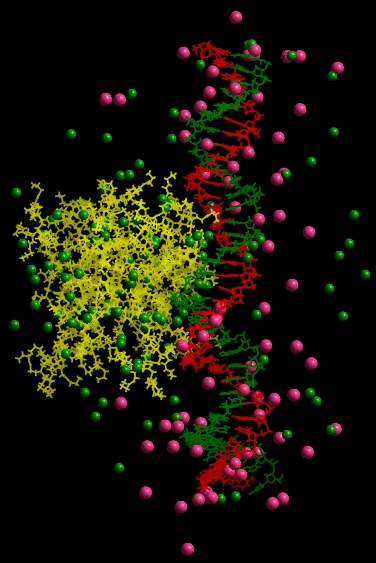

Several
recent studies indicate that PAMAM dendrimer can be used as a delivery
agent for biomolecules inside mammalian cells. At
physiological pH PAMAM dendrimers are positively charged and can
effectively bind negatively charged biomolecules such as DNA and can be
used as gene delivery materials. There are indications
that lower toxicity and higher transfection efficiency can be obtained
by using complexes between DNA and PAMAM dendrimers. The
charge distribution of DNA within the dendrimer-DNA complex has a
direct influence on the stability and activity of such transfection
complex. It also affects the DNA conformations within such
complex. However, it is not yet clear how the
dendrimer environment and other various factors such as pH, salt
concentration affects the DNA conformations. The answers to questions
such as, what the mechanism by which dendrimer condensed with DNA and
what role the terminal amine group (primary amines) plays in
condensation, remain unclear

Binding of 38 base pair dsDNA (a) with single G5 PAMAM dendrimer; (b) with 6 G4 PAMAM dendrimers.